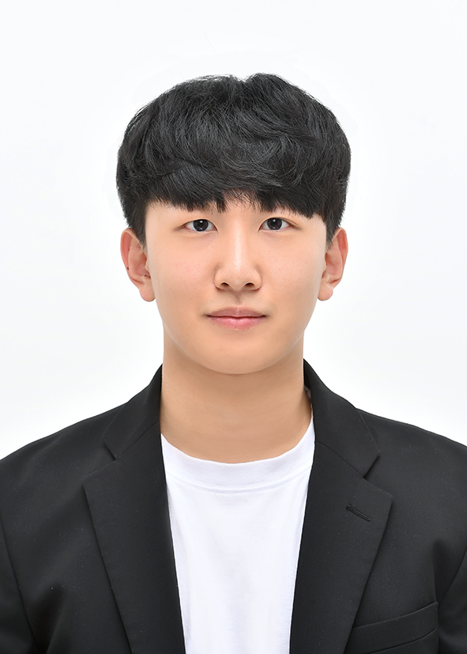
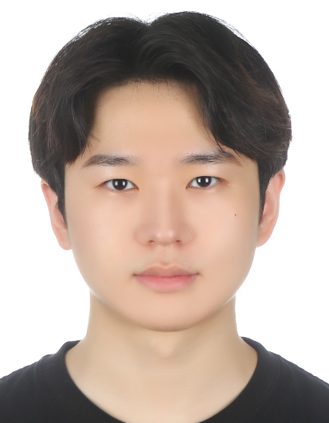

Professor

Eun Yi Kim
Professor
eykim@konkuk.ac.kr
Senior Members
Longbin Jin
Ph.D. Graduate
jinlongbin@konkuk.ac.kr, lbjin@voinosis.com
Current Members
Yealim Oh
Master Student
dodoh0125@konkuk.ac.kr

Hyo Jin Jon
Master Student
hyojin2011@konkuk.ac.kr

Hyuntaek Jung
Master Student
busan199@konkuk.ac.kr
Hyunseo Kim
Master Student
hs11015@konkuk.ac.kr
Heejae Choi
Master Student
qkw1205@konkuk.ac.kr

Shinwoo Ham
Master Student
gka0656@konkuk.ac.kr
Donghun Min
Master Student
mindonghun@konkuk.ac.kr
Junil Jeon
Master Student
jeonjunil@konkuk.ac.kr
Myeonghun Jung
Undergraduate Student
jmfc02@naver.com
Alumni
- Longbin Jin
- Oug Hyen Cheong
- Jaeyoung Chang
- Chenghuan Zheng
- Jinxi Li
- Yaohui Yu
- Keumhee Kang
- MyeongJin Lee
- Chanhee Yoon
- Jinyoung Ahn
- Yeounggwang Ji
- Umid Akhmedjanov
- Jihye Hwang
- Eunjeong Ko
- Byung-geun Kim
- Yong-rae Kim
- Jin-Sun Ju
- Na-yeon Kim
- Yun-hee Shin
- Kun-il Lee
- Ki-young Jeong
- Kyung-tae Kim